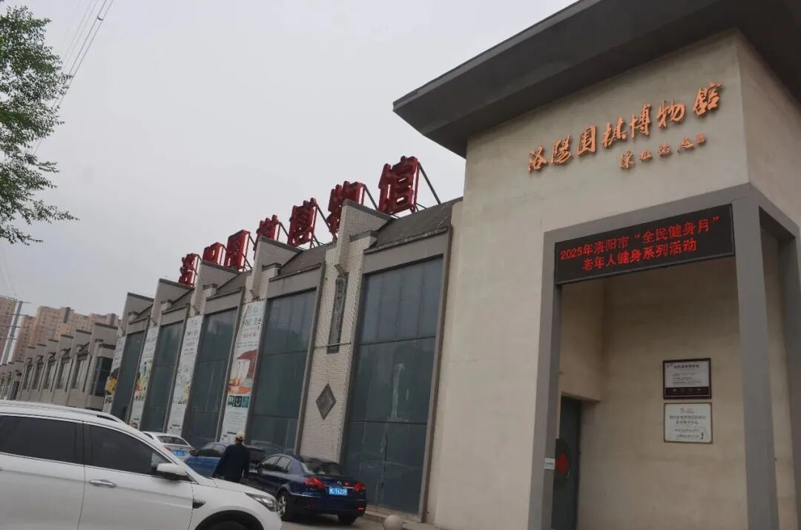
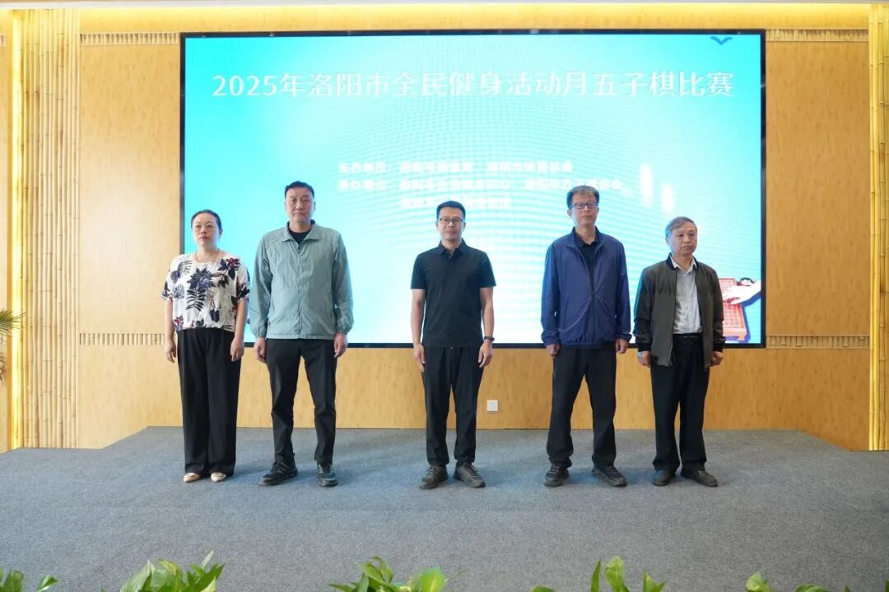
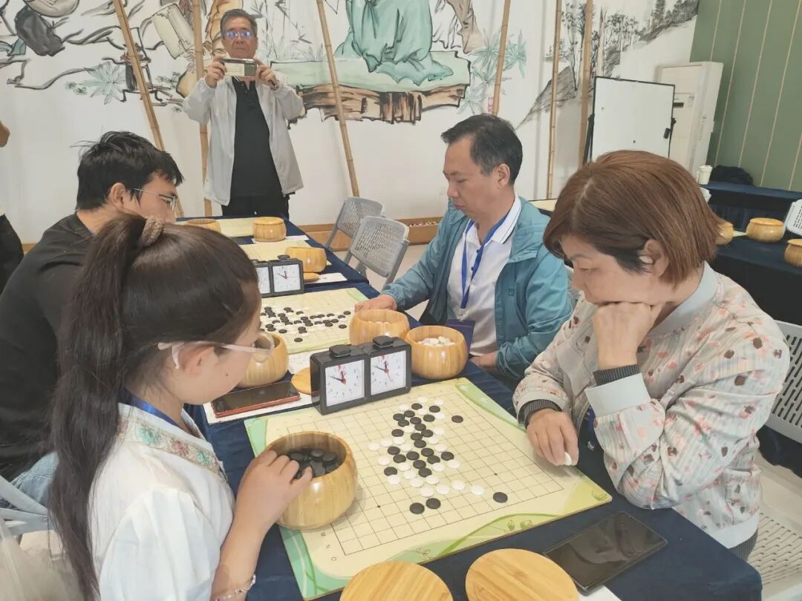
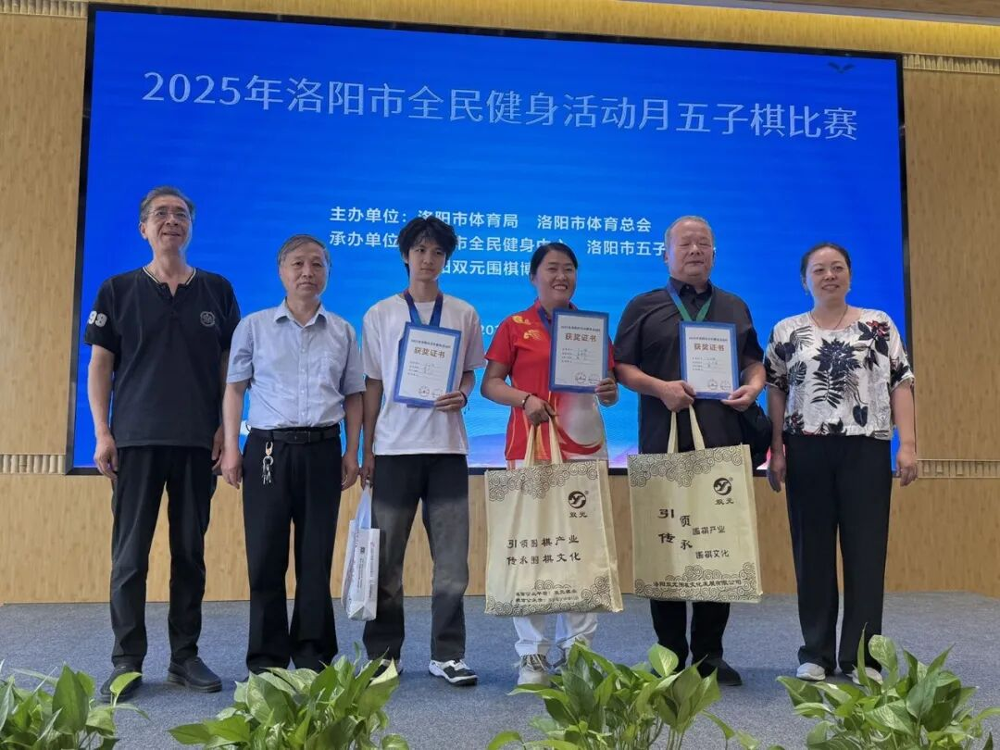
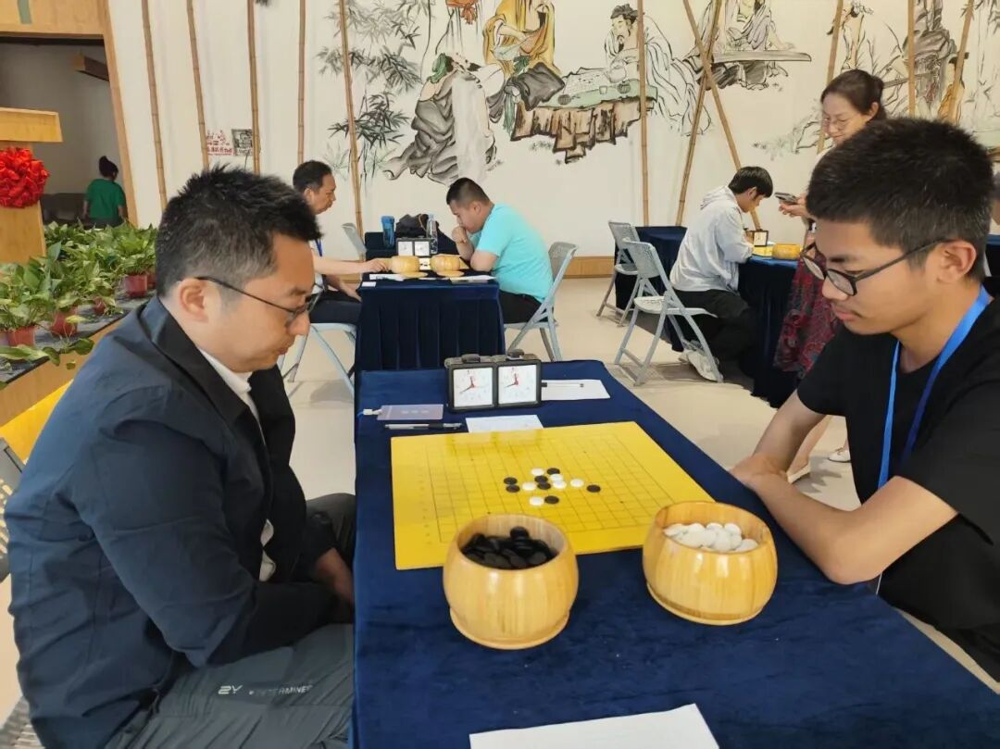
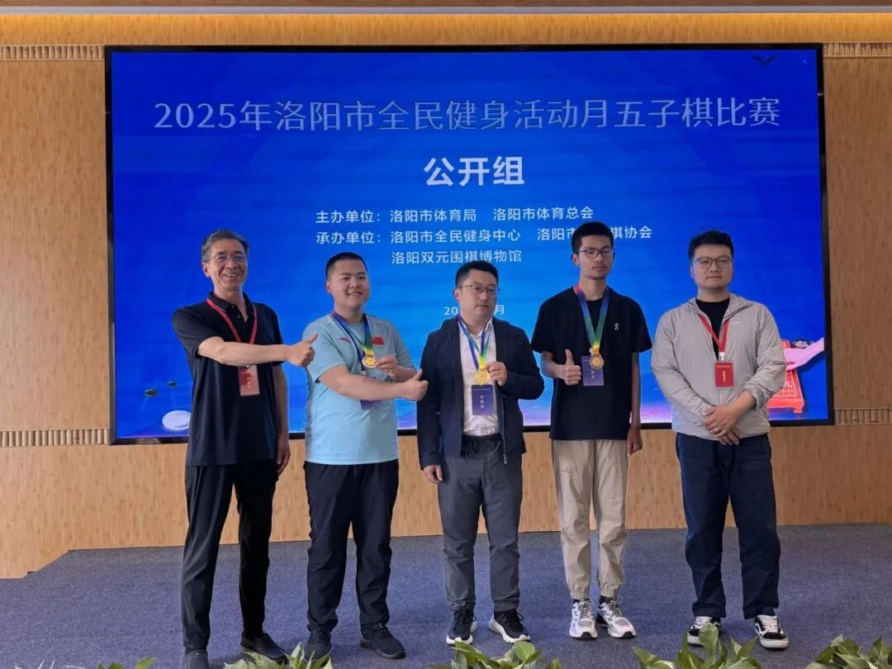

2025年洛阳市全民健身活动月
五子棋比赛盛大落幕
2025年5月10～11日，为期两天的“2025年洛阳市全民健身活动月五子棋比赛”在洛阳市五子棋协会双元训练基地圆满收枰、盛大落幕。本次比赛吸引了80多名五子棋爱好者踊跃报名参加，参赛选手年龄跨度从7岁到70岁，充分展现了五子棋运动的全民参与性和广泛群众基础。

河南省棋类协会副会长姜林、洛阳市全民健身中心副主任任峥、洛阳市全民健身中心体育竞赛管理部主任李鹏、洛阳市五子棋协会常务会长郑学通、洛阳市五子棋协会执行会长兼秘书长何全良、洛阳双元围棋文化发展有限公司董事长董艳丽等领导嘉宾参加开幕式。

开幕式于5月10日上午9:15正式开始。在庄严的国歌奏唱后，洛阳市五子棋协会常务会长郑学通先生致辞。他对参赛选手表示热烈欢迎，并强调了五子棋运动在全民健身中的重要作用，呼吁更多人积极参与到这项智力运动中来。随后，运动员代表周林希和裁判员代表王锦萍分别宣誓，表达了对比赛的尊重和遵守规则的决心。裁判长梁建平宣读了比赛规则。最后，河南省棋类协会副会长姜林宣布比赛正式开赛，现场气氛热烈，比赛正式拉开帷幕。
赛场上，裁判员、工作人员各司其职、紧张有序；参赛人员聚精会神，激烈交锋。相较于围棋，五子棋的容错率更低，一着不慎、满盘皆输。因此，选手们更加谨小慎微，每一步都如履薄冰、仔细计算。每一步落子都是智慧碰撞的火花，每一次交锋都是计算力与空间想象力的综合较量。

5月10日进行的无级别组执行自由开局，无禁手，按积分编排制比较积分区分名次。经过七轮激烈对决，前三名选手脱颖而出，翟海棠、刘予军和罗天分别获得冠、亚、季军。

5月11日，公开组的比赛更是精彩纷呈。公开组执行指定开局，三手交换，五手N打，N=2，按积分编排制比较积分区分名次。相较10日的自由开局、无禁手规则，11日的赛场更加激烈、更加精彩，可谓局局出新。经过四轮对决，王宗良以绝对优势，一骑绝尘，杀出重围，斩获第一名。大学生代表潘冠臣凭借出色的棋艺获得第二名。王鑫宇获得第三名。


本次比赛不仅为五子棋爱好者提供了一个交流和竞技的平台，也进一步推动了洛阳市全民健身运动的深入开展。通过这样的赛事，更多人感受到了五子棋运动的魅力，激发了大众参与体育运动的热情，为全民健身事业注入了新的活力。